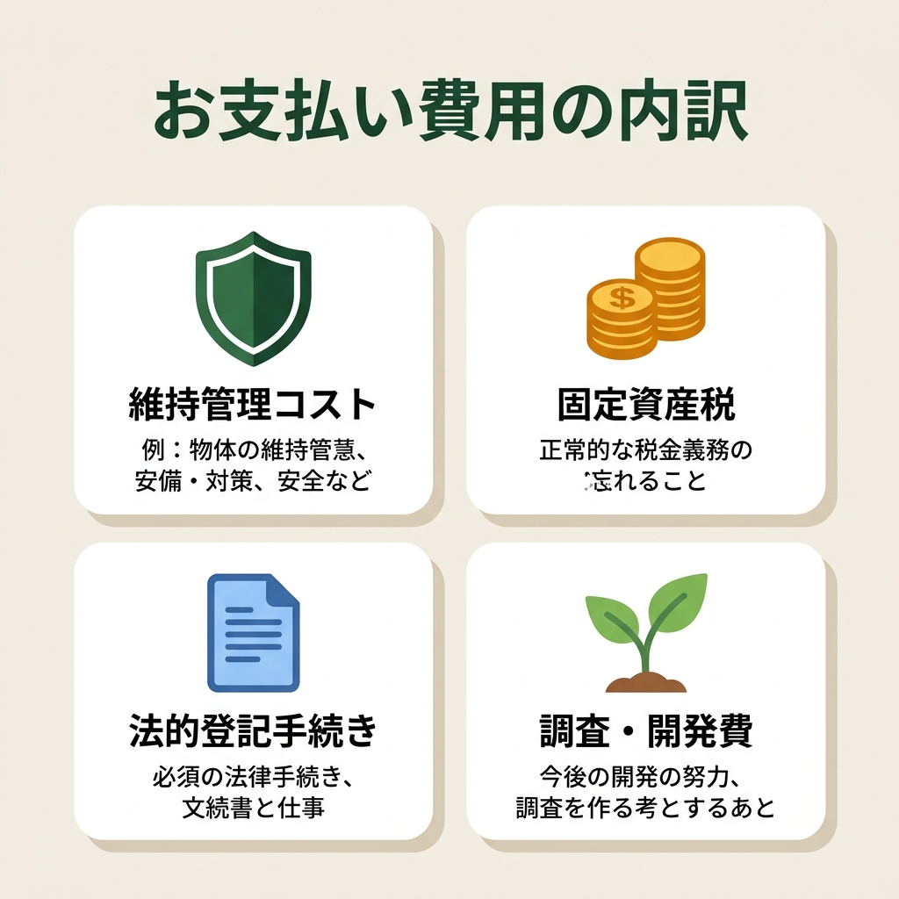
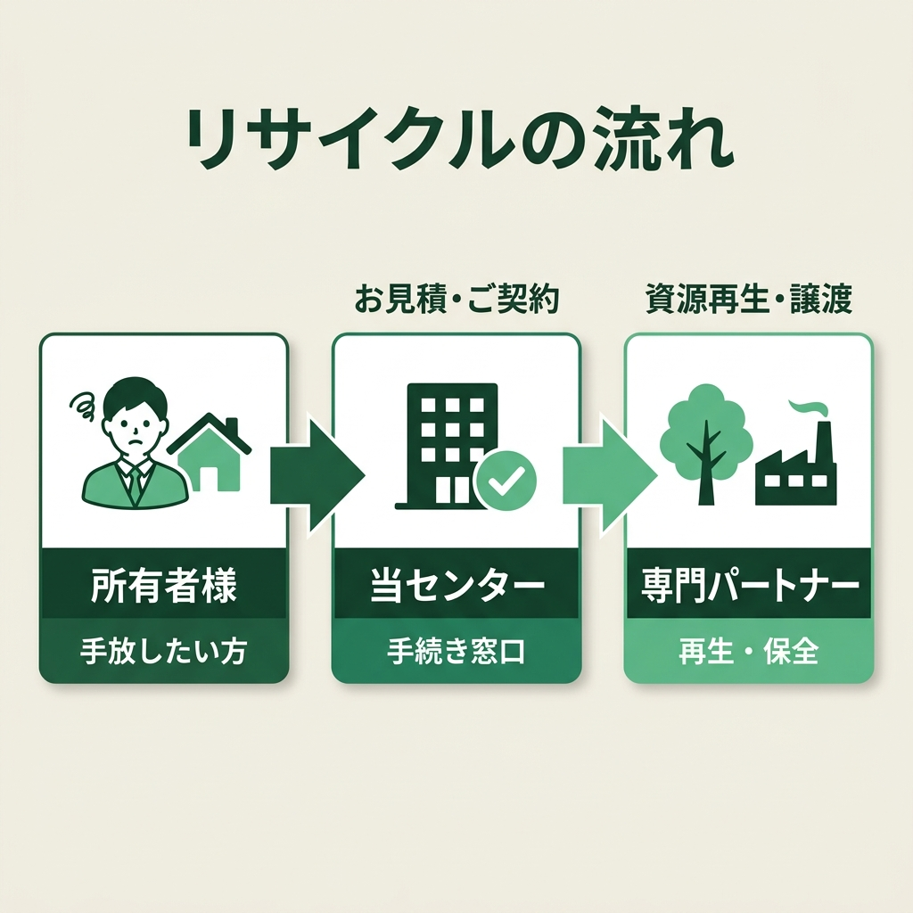
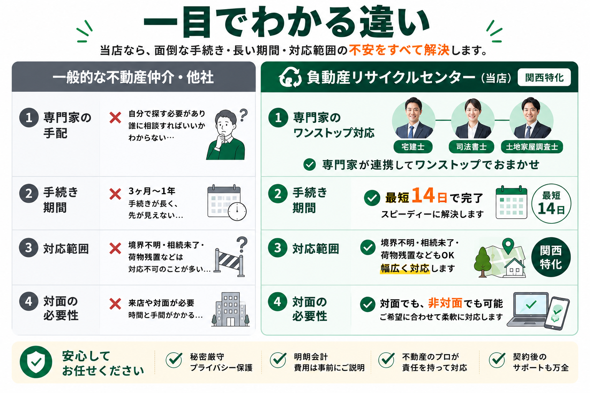
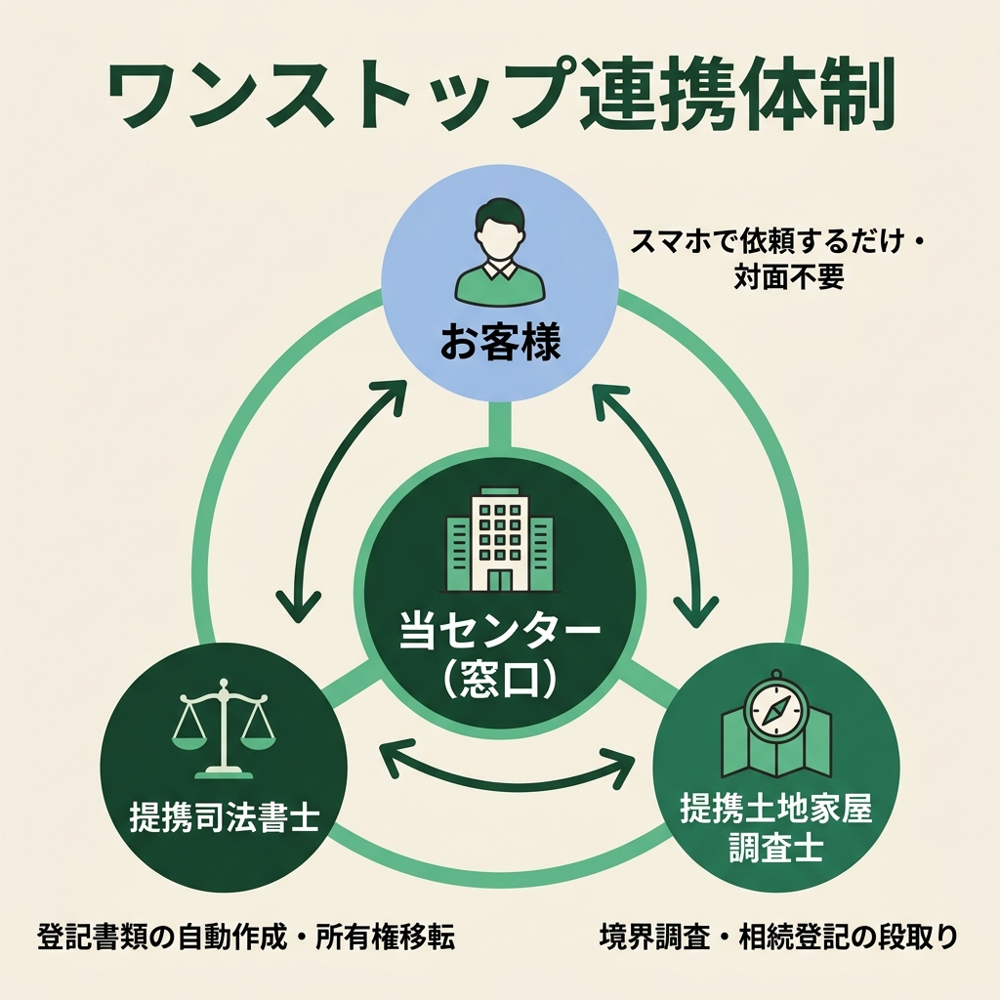
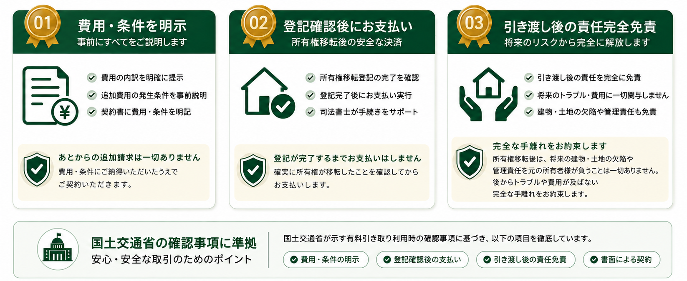
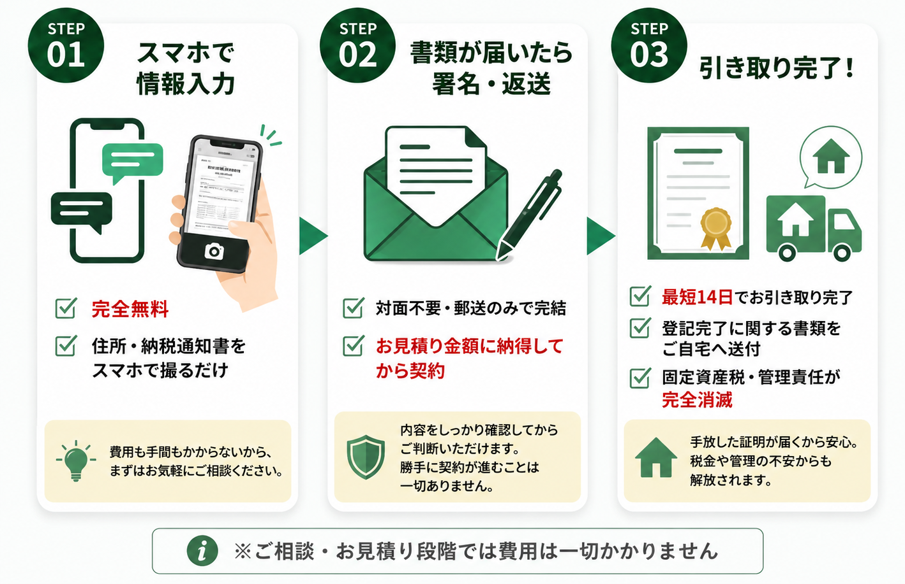

＼ 関西主要エリアの ／
売れない実家、処分したい山林・土地を次の価値へ。
「負動産」の有料引き取り専門窓口
仲介も買取も断られた田舎の空き家・古民家・山林・原野を、専属の司法書士・土地家屋調査士チームが最短1〜2週間であなたの名義から完全に切り離します。管理責任や将来の負担から解放される安心の引き取り代行サービス。

登記引き取り
相談対応

相続した実家や土地、
どうしたら良いの？
処分困難な「負動産」を抱える多くの方が、同じ葛藤を持っています。

どこに相談しても
「売れない」と断られた
山奥の土地や老朽化した空き家は、不動産会社から「取引できない」と断られ処分方法がない。

毎年、固定資産税や維持費だけを
払い続けている
誰も使わないのに、毎年固定資産税や草刈りの維持費だけが引き落とされ続けている。

家具や荷物が残ったままで
片付ける費用も時間もない
古い家財道具やゴミがそのまま残っており、遠方のため片付けに行く時間も予算もない。

相続登記の未了や境界の曖昧さで
トラブルにならないか不安
昔の名義のまま放置されていたり、隣地との境界線が分からず将来的に子どもたちへ負担を遺したくない。
＼ 最近このようなご相談が急増しています ／
空き家・建物のトラブル例
-
解体・雨漏り
崩壊の危険・雨漏りが酷いのに解体費用がない
老朽化が進んで危険なのに、数百万円かかる解体費用が払えず放置するしかない状態。
-
通行権・隣人
囲繞地通行権や私道の通行トラブルで揉めている
今まで無償だった隣地や私道の通行に関し、突然通行料を請求されたり話し合いが拗れた状態。
-
家財・ゴミ
相続した実家がゴミ屋敷状態で手がつけられない
何十年分もの家財道具や不用品、ゴミが山積みで、片付け費用も時間もない状態。
-
訳あり・事故
事故物件や、改装しても売れないリスクを負いたくない
事故物件であるため売りに出せない、またはリフォーム費用をかけても売れ残って赤字が広がるリスク。
山林・土地のトラブル例
-
二次災害・山火事
大雨による土砂崩れや山火事の賠償責任が怖い
近年の異常気象による土砂崩れや乾燥による山火事など、万が一の二次災害による所有者責任の懸念。
-
所在不明
地番はわかるが、場所が全くわからず管理できない
祖父やそれ以前の代から所有しているが、住宅地図やゼンリンにも載っておらず、現地にも行けない状態。
-
飛地・未接道
道がなく他人の土地に囲まれた「飛地（無接道）」
道路に接しておらず、周囲を他人の土地に囲まれていて立ち入りすら困難な状態。
-
法的制限・保安林
枝一本切るのにも許可が必要な「保安林」の指定
国の指定（保安林）になっているため、草刈りや伐採などの自由な処分や維持管理が極めて難しい状態。
-
リゾート・通行料
バブル期の放置別荘地で、通行・整備費を請求された
開発業者が私道を放置したためダメージが酷く、最近になって道路整備費や高額な通行料を請求された状態。
「売れない」と断られた物件を、
法的な安心と共にお引き受けします
親や祖父母が遺してくれた家や土地。手放すことに罪悪感を感じる方もいるかもしれません。しかし、管理が途絶えた空き家や山林を放置することは、倒壊や土砂崩れなど、地域社会への危険や近隣クレームに繋がります。
私たちの有料引き取りサービスは、単なる処分ではなく、「未来のための前向きなリサイクル」です。引き取った物件は放置せず、空き家再生や木材保全、太陽光発電、キャンプ場開発などを行う専門事業者へと繋ぎます。あなたの代で綺麗に整理し、責任をもって次の社会資源へと還元します。

なぜ「有料引き取り」なのか？
確定したお見積り費用を一括でお支払いいただき、管理責任と将来の固定資産税・維持費を引き受けます。

安心のサポート体制
シニア層やそのご家族が重視する「法的な確実性」
司法書士・専門家との緊密な連携
所有権の移転登記手続きは、提携する司法書士が法に則って確実に行います。
手続き完了後は、公的な書面（登記識別情報通知等）をもって、所有権移転の完了をご報告します。法的な管理責任は完全に解消されます。
引き取り後の「リサイクル」スキーム
専門パートナーへの確実なバトン引き継ぎによる価値の再循環

負動産リサイクルセンターが選ばれる3つの特徴
専門家ネットワークと独自リサイクルスキームによる安心の処分・引き取り体制

郵送だけで完了する
自動登記セットアップ
提携司法書士が登記に必要な書類をすべて作成します。お客様は実印を押して返送するだけで、安全かつ確実に名義変更手続きが完了します。

相続未了・名義人多数でも
ワンストップ対応
相続登記が完了していない状態や、共有名義人が多くて話が進まないなどの複雑な状態でも、当センターがすべての手続きを代行・整理します。

引き取り後も安心な
専門リサイクル
引き受けた不動産は放置せず、提携する不動産開発会社や林業保全団体、再生可能エネルギー事業者へバトンを引き継ぎ、活用します。
一目でわかる「他社・通常の仲介」との違い
当センターの負動産引き取りが選ばれる理由

あなたが動かなくていい理由
プロ集団の「完全自動連携」で、お客様は「書類の返送を待つだけ」

「3つの安心宣言」
契約完了まで金銭的・法的に安全な取引を徹底します。

安心のサポート体制 ＆ 対応エリア
シニア層やそのご家族が重視する「法的な確実性」と「地域窓口」
司法書士・専門家との緊密な連携
所有権の移転登記手続きは、提携する司法書士が法に則って確実に行います。
手続き完了後は、公的な書面（登記識別情報通知等）をもって、所有権移転の完了をご報告します。法的な管理責任は完全に解消されます。
地域別専用窓口（順次拡大中）
京都エリア窓口
【対応地域：京都北部（綾部・福知山・南丹・京丹波）】
地元のローカルネットワークと連携し、空き家、古民家、長屋、アパートなどの早期引き取り査定を行っています。実績多数のエリアです。
滋賀エリア窓口
【対応地域：湖西・北部（大津・高島・長浜）】
大津市湖西や高島・長浜などの豪雪地帯に放置された空き家・古民家を有料引き取りする地域専用窓口です。
兵庫エリア窓口
【対応地域：淡路島・山間部（但馬・丹波・西播磨）】
淡路島の放置空き家や但馬の豪雪地の建物、丹波や西播磨の古民家などを有料引き取りする地域専用窓口です。
和歌山エリア窓口
【対応地域：有田川・紀美野・紀南山間部・高野山】
山間部や沿岸部に放置されたままの空き家や古民家、使用されなくなった店舗などを受付・有料引き取りする地域専用窓口です。
大阪エリア窓口
【対応地域：豊能ニュータウン・南河内山間部】
能勢・豊能のオールドニュータウンの空き家、南河内の維持困難な古民家・長屋などを有料引き取りする地域専用窓口です。
「完全非対面・郵送のみ」の3つのステップ
来店も対面も不要。ご自宅にいながらスピーディに手放せます

よくある質問
お客様から寄せられる代表的なご質問に率率直にお答えします
はい、原則としてどのような物件でもお引き受け可能です。 他社で断られた崖地、再建築不可の狭小地、道路に面していない土地、境界が不明な山林、相続登記が未完了の古い空き家でも問題ありません。専属の土地家屋調査士や司法書士チームが法的な調査から手続き整理までダイレクトに行いますので、安心してお任せください。（※ただし、農地法の制限を受ける農地、抵当権などの担保権が設定されたままの物件、その他法的に移転が極めて困難な要因がある場合はお引き受けできない場合がございます。）
物件の所在地、面積、固定資産税の額、将来的な維持管理コストや、登記にかかる費用（登録免許税や専門家報酬など）を勘案して「一回限りの確定お見積り（処分代金）」をご提示します。 お見積り額以上の追加費用が発生することは一切ございません。目安は無料査定にて物件情報をお知らせいただければ算出いたします。
提携司法書士が法務局への所有権移転登記を完了した時点で、お客様の法的な管理責任および固定資産税の納税義務は100%消滅します。 登記完了後は、法的に名義が離れたことを証明する「登記事項証明書（登記簿謄本）」の写しなどの登記完了書面を郵送にてお渡しいたします。
いいえ、完全に「対面不要・郵送完結」で手続きが完了します。 LINEやWEBでの査定完了後、契約書や登記委任用の必要書類をご自宅へ郵送いたします。必要事項にご記入・ご捺印（実印）の上、返送していただくだけですので、遠方にお住まいの方やご多忙な方でも問題なく進められます。
はい、現状のままでご相談いただけます。 相続登記が未了の物件であっても、提携司法書士が相続人様の整理から書類作成までトータルでサポートしますので、まずはお気軽にご相談ください。
「負動産」のお悩み、
法的な安心とともに解消します。
「親から引き継いだけれどどうしようもない」「子供や次の世代に負担を残したくない」と葛藤していませんか？まずは無料の引き取り査定をご相談ください。専門知識をもったチームが親身に解決へ導きます。
スマートフォンで物件の状況や納税通知書、現地の写真などを撮影して送るだけ！24時間いつでも簡単に査定依頼が可能です。専門家への相談もLINEからワンタップで行えます。

【安心の3つの約束】お見積り確定後の追加費用ゼロ / 登記完了後の完全後払い制 / 国土交通省ガイドライン準拠